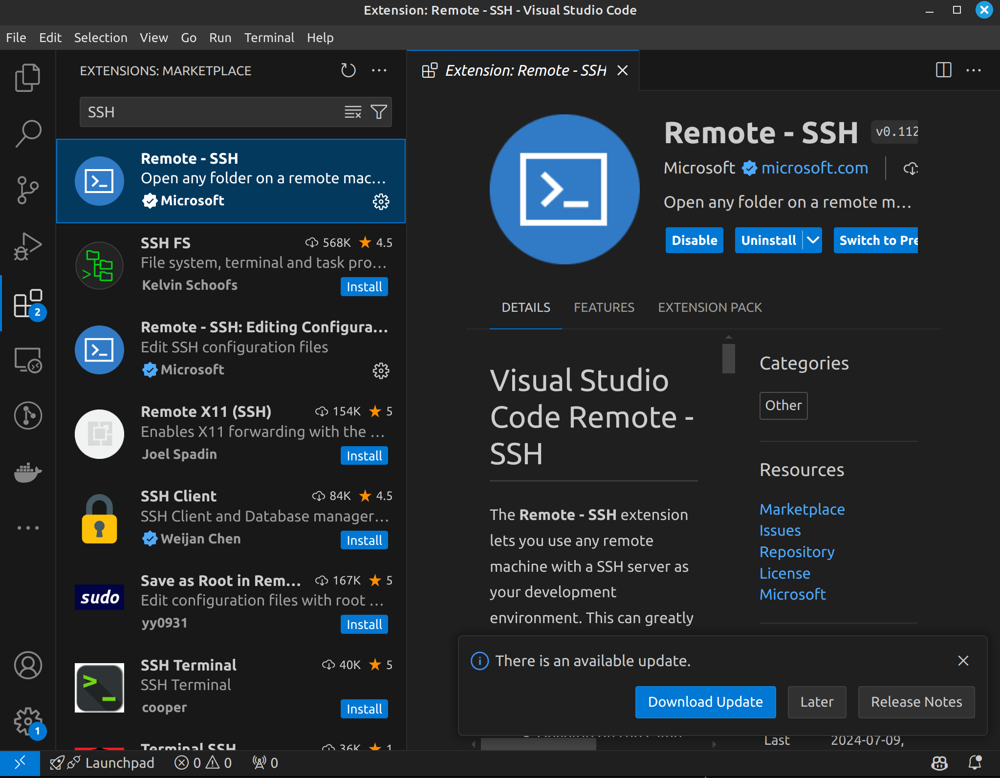

Linux¶
卷首语¶
从个人偏好与经验来讲, 我推荐大家直接使用原生的 Linux / Mac 进行开发. 原因如下:
- Windows 上面配环境太见鬼了, 且 Windows 上 WSL2 有些内存问题, 容易消耗大量内存导致系统不稳定.
(当然有人跟我杠过, 你杠就是你对) - Linux 可以更好配置网络环境, 同时使用大量的 VPN, 策略路由, proxychains. (当然, 你杠就是你对)
- Linux 装系统快, 系统占用小, 玩坏了不心疼 (x)
- 在本地和服务器上有相似的环境, 省得脑壳疼
Linux 上面的东西很多, 还是那几句话, 记得查 man, 记得查官方文档, 记得问 GPT.
从我的经验上说:
- 当你不知道一件事应该用什么完成的时候, 问 GPT, 但是问完了别慌着用;
- 当你知道一件事大概应该用什么完成的时候, 查 Manual (或者 tldr), 确定正确;
- 当你知道一件事如何完成的时候, 可以看看社区里面有没有更好的方法.
由于学长已经讲了很多了, 我就先提纲挈领, 把我认为有必要讲的东西简单说说.
发行版¶
狭义上的 "Linux" 其实就是一个内核. 上面由各个社区造了很多轮子, 很多轮子组合在一起产生了很多 "发行版". DistroWatch 上面有很多发行版的排名, 你可以去看看. Linux 的每一个发行版都有自己的特点, 可以按需取用 (也可以 Distro-Hop).
我知道的一点发行版和特性包括了:
- Ubuntu: 很多人把 Linux 和 Ubuntu 画等号, 应该是因为 Ubuntu 确实比较常见, 名气也不小. 不过我觉得它相貌平平, 兼容性倒确实很好.
- Ubuntu Server: 用于服务器, 没有 GUI, 但是可以选择预装大量的服务端软件.
- Debian: Ubuntu 的上游, 以稳定著称.
相当丑.服务器上用的多些. - Linux Mint: 我主力使用的发行版, 基于 Ubuntu, 但是更加注重用户体验 (好看).
- Arch Linux: 开发者觉得 "一切决定权留给用户", 安装好之后甚至没有 Desktop Environment, 但是深度可定制, 折腾得好就很好用. 软件包相当新.
三天两头爆炸 - Manjaro: 基于 Arch, 没有具体了解.
- Fedora: Red Hat 的社区版, 听说是 "几乎所有的开发环境都能一键安装", 很省心的系统.
- Kali Linux: 专用于渗透测试的系统, 预装了大量的渗透测试工具.
俗话说, Kali 用得好, 牢饭吃到饱 (什么)
基本操作¶
去年的暑培文档讲得相当详细 (并且很多我也不会), 所以在这里就不再赘述了. 你可以参考去年的文档和 Docs9 来入门与学习.
记住: man 和 tldr 是好东西.
SSH¶
我们接下来将直接讨论 Linux 远程使用的最常用手段: SSH. 这在下学期的 ICS 课程中将会用到, 在干乱七八糟事情的时候也总会用到.
什么是 SSH¶
Secure SHell, 是一种用于在不安全网络上 安全访问远程计算机 的协议. 它提供了一种加密的方法, 使得用户可以通过不安全的网络连接上安全地 远程登录 (ssh) 和传输文件 (scp / sftp).
SSH 提供了完整的 Linux Shell 支持, 且协议开源可信, 常用终端开源, 安全漏洞较少, 因此被广泛使用.
SSH 的基本使用方法¶
man ssh:
1 2 3 | |
看着一大坨对吧 (x) 那么看看 tldr 怎么说:
1 2 3 4 5 6 7 8 9 10 11 12 13 14 15 16 17 18 19 20 21 22 23 24 25 26 27 | |
简单地说: 在 80% 的情况下, 你只需要记住 ssh username@remote_host 即可. 比如: ssh root@example.com.
我印象里 ICS 的 SSH 在 2222 端口, 所以你需要 ssh ics_2023000000@166.111.xxx.xxx -p 2222.
需要注意的是: SSH 的几个应用的端口号设置不尽相同, 还是得稍微记一下.
1 2 3 4 5 6 7 8 9 | |
Pubkey Authentication¶
现在我们基本解决了 直接 连接问题. 接下来我们讨论一下认证问题.
SSH 的基本认证模式是密码认证. 但是现代 Linux 为了防止密码爆破, 常常使用 Yescrypt 等算法. 如果你开了密码认证且有人想爆破你的密码, 20000 Pwd/s 的速度会耗尽你服务器的计算资源并导致你自己连不上去. (参考, 上个寒假科协的服务器就这样.)
同时, SSH 的密码认证是 加密信道中传输明文密码, 如果我有 Root 权限, 我可以给 sshd 挂钩子, 记录你的密码.
为了避免这些问题, 我们推荐使用 Pubkey Authentication.
首先使用 ssh-keygen 来生成一个密钥对 (已经干过的可以跳过). 个人推荐 ED25519 算法 (ssh-keygen -t ed25519). 用默认方法生成之后, 你会得到两个文件: ~/.ssh/id_ed25519 和 ~/.ssh/id_ed25519.pub. 前者是私钥, 后者是公钥.
永远不要暴露自己的私钥!!!
然后可以使用两种方法将公钥传输到服务器上:
-
使用
ssh-copy-id命令:ssh-copy-id -p 2222 root@example.com, 注意是 小写 p, 放前面. (为啥每个命令都不一样呢) -
手动编辑
~/.ssh/authorized_keys文件, 将公钥复制进去. 记得复制全了. 记得这个文件的权限最好是 600, 即只有你自己能读写 (chmod 600 ~/.ssh/authorized_keys).
SSH with Proxy / Jumping¶
实际上我们经常遇到需要通过代理 / 多级连接才能连接到目标服务器的情况. 这时候我们可以使用 SSH 的 Proxy / Jumping 功能.
当需要通过代理连接时, 我们一般使用 ProxyCommand 选项. 例如:
1 | |
这表示我们期望通过 (-x) 59.66.xxx.xxx:49274 的 Socks5 (-X 5) 代理连接到 192.168.1.2 的 ajax 用户. 具体的设置参考 man nc (apt install netcat)
当拥有各级服务器的权限时, 可以使用 Jumping 功能. 例如:
1 | |
需要注意的是, man ssh 中这样写到:
Note that configuration directives supplied on the command-line generally apply to the destination host and not any specified jump hosts. Use ~/.ssh/config to specify configuration for jump hosts.
即中间跳板的配置需要在 ~/.ssh/config 中给出.
SSH Tunneling¶
远程开发常常会遇到需要做端口映射的情况. 这时候我们可以使用 SSH Tunneling 功能. 考虑以下场景:
- 你想以服务器的身份 (IP) 访问内网网页:
1 | |
这会在 localhost:1080 开放一个 Socks5 代理服务器, 可以设置系统代理 / 浏览器代理到这个端口, 这样你的浏览器就会以服务器的身份访问网页.
- 你想访问远程的 Django 网站:
1 | |
这会把远程服务器看来的 localhost:8000 映射到本地的 (localhost:)9000, 你可以直接访问本地的 localhost:9000 来访问远程的 Django 网站. 也可以 -L 0.0.0.0:9000:localhost:8000 来让其他人访问 (这可能很危险, 慎重!).
- 你想让远程服务器访问你的本地服务:
1 | |
这会把本地的 localhost:8000 映射到远程的 (localhost:)9000, 这时远程服务器访问 localhost:8000 会访问到本地的服务.
常用的 SSH 命令就这么些, 在连接一些古老设备 / 嵌入式设备时, 你可能遇到各种报错. 把报错复制粘贴到 Google 里面就能得到解决方案.
Task¶
在登录之后, 一切都像本地一样. 唯一的问题是: 当我需要在服务器上面跑一些东西, 又不想一直挂着在线, 怎么办? 当我网络不太稳定, 怎么保证跑的程序不会因为我掉线而停止? 如果我希望并发开两个程序, 我一定要再开一个 ssh 嘛?
Job Management¶
现代的 Shell 都有 Job 管理的功能: Shell 可以有最多一个前台任务和多个后台任务. 键盘 (stdin) 只能与前台任务交互, 但是所有的任务共享屏幕输出 (stdout).
- 你可以在命令后面加上
&来让命令在后台运行:
1 | |
然后你的屏幕上就会被一大坨 ping 的输出刷屏了 (大雾)
- 你可以对前台任务使用
Ctrl + Z来暂停任务, 然后使用bg命令将任务放到后台; 也可以使用fg %t命令将任务 t 放到前台:
1 2 3 4 5 6 7 8 9 10 11 12 13 14 15 16 17 18 19 | |
- 你可以使用
jobs命令查看当前的任务:
1 2 3 | |
需要注意的是, 某些任务可能不能使用 Ctrl + Z 暂停, 会出现不可预料的问题; 某些任务无法使用 bg 命令放到后台, 如 vim.
1 2 3 | |
SIGHUP¶
当你退出 SSH 时, 你的 Shell 会收到一个 SIGHUP 信号. Shell 将此信号传递给所有子进程, 通知它们父进程已经退出, 并且它们应该退出. (于是跑了两个小时的程序就没啦~) 此时有两种解决方法:
- 使用
nohup命令. (这要求你在开始程序之前就想好)man nohup. - 使用
disown命令. (这要求当前程序能正常暂停并放在后台)man disown
Terminal Multiplexer¶
虽然前面的 Job 管理很好, 但是还是不太好. 比如: 你没法再次 Attach 到 nohup 的任务上, 没法 interactive 地输入输出等.
因此, 在此隆重推出 tmux 和 screen 这两个 Terminal Multiplexer. 它们可以让你在一个 SSH 连接上开多个 Terminal, 并且可以在断开连接后重新 Attach 到之前的 Terminal 上.
这两个工具的想法比较类似: 它有多个已经 Detach 的 Session; 每个 Session 可以有多个 Window; 每个 Window 可以有多个 Pane.
我用 Tmux 比较多, 因此这里只讲 Tmux (具体请 man tmux).
tmux new -s session_name: 新建一个名为session_name的 Session.tmux attach -t session_name: Attach 到名为session_name的 Session.
在 Session 中:
Ctrl + B, C: 新建一个 Window, 不过我不太用.Ctrl + B, 1-9: 切换到 Window 1-9.Ctrl + B, D: Detach 当前 Session.Ctrl + B, %: 横向分割当前 Pane.Ctrl + B, ": 纵向分割当前 Pane.Ctrl + B, ArrowKey: 切换 Pane.Ctrl + B, Ctrl + ArrowKey: 调整 Pane 大小.
...
建议 开 SSH 就开一个 tmux, 这样就免去了大量掉线烦恼.
VSCode SSH¶
大家用的最多的远程开发工具应该是 VSCode 的 SSH 插件. 这个插件可以让你在本地 VSCode 中编辑远程服务器上的文件.
安装 VSCode SSH¶

我印象里默认是装好的?
打开 VSCode SSH¶
左下角的 Open a Remote Window 点一下, 选 Connect to Host.... 推荐使用公钥登录, 不然你会不停输密码.
然后输进去 [user@]host[:port] (推荐写 SSH Config)
如果需要多级跳板 / 代理, 请使用 SSH Config.
VSCode 会配置自动端口映射, 也可以在 PORTS 选项手动配置.